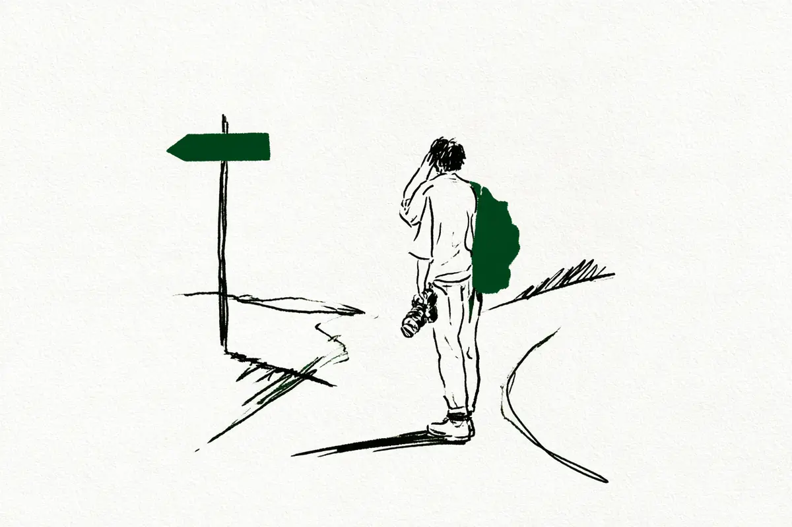
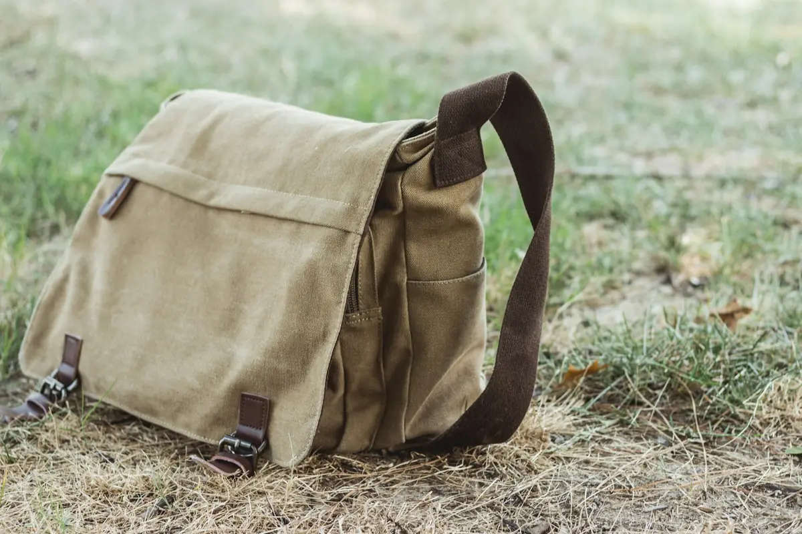

この記事には広告(アフィリエイトリンク)が含まれます。
現在地: 続けるか迷ってる
カメラ趣味はやめとけ?やめた人・続けた人11件の声から理由を数えてみた

カメラを始めようか調べていると、「カメラ趣味 やめとけ」という言葉に、わりと早くぶつかるんですよね。もう始めている人なら、なおさら気になると思います。「やめとけ」と言われると、自分の迷いを肯定されたような、否定されたような、落ち着かない気持ちになります。
この記事では、やめた人・やめかけた人・続けている人の記事を11件読んで、よく挙がっていた理由を5つに整理しました。そのあとに、続けた人の例と、続ける・やめるの間にある選択肢を並べています。
先に正直に書いておくと、私はカメラを持っていません。なので「私が使ってみたら」という話は出てきません。書いてあるのは、私が読んだ他の人の声と、その整理だけです。
読んだ11件の内訳です。
- 機材を全部手放した人: 2人(bato・ゴーゴーシンゴ)
- 一眼レフをやめて別のカメラで再開した人: 1人(Yahoo!知恵袋の回答者eveさん)
- 本気でやめかけて戻った人: 1人(わっち)
- 機材を減らしながら迷っている人: 1人(Yahoo!知恵袋の質問者)
- 続けながら「やめとけ」に答えている人: 5人(ヒガシーサー・ぼすかる・モノスクラム・俺のデジモノ手記・知恵袋のベストアンサー)
- その他: カメラも扱うレンタル(個人間の貸し借り)サービスが運営するメディア1件、一般論の記事2件(沼探は編集後記だけが体験談)
事業者の記事と個人の体験談は、この記事の中で区別して書いています。
理由ごとの数え方と、まとめ表
| 理由 | 体験談(8件中) | 事業者・一般論(3件中) | 例(誰がどうしたか) |
|---|---|---|---|
| お金がかかる | 5 | 3 | わっちさんは新製品に振り回されて買っては売り、やめかけて戻った/モノスクラムの方は買う前に半年悩み、3年続けている |
| 重くて持ち出さない | 5 | 2 | eveさんは一眼レフをやめてミラーレスで再開/batoさんは小さめのカメラでも重く、やめた/ヒガシーサーさんは持ち出さない日は写真が残らないと認めつつ続けている |
| 撮るもの・目的がなくなる | 4 | 3 | batoさんは撮ることで旅を楽しめなくなり、やめた/知恵袋の質問者は撮る目的が「記録」に変わり、迷っている |
| SNS・他人と比べて疲れる | 4 | 3 | batoさんはいいねをもらっても何も変わらず、やめた/わっちさんはSNSの界隈に気が落ち込んだが、戻った |
| スマホで十分 | 4 | 2 | 知恵袋の質問者はスマホの出番が圧倒的に多く、迷っている/ヒガシーサーさんは記録の9割がスマホでも続けている |
| 機材沼・新製品に振り回される | 4 | 2 | わっちさんは最短一週間でマウント替え/ヒガシーサーさんは三脚が10台以上 |
| 撮ったあとの整理・見返さない | 3 | 3 | batoさんは撮った写真を見返さず、やめた/ヒガシーサーさんはプリントの整理が止まった時期がある |
| 上達が見えない | 3 | 3 | わっちさんはうまく撮れないのがストレスになった |
| 義務感になる・生活を侵食される | 3 | 1 | |
| 周りの目が恥ずかしい | 2 | 1 | 中身ごとの工夫はカメラを持ち歩くのが恥ずかしいときに |
| 仲間がいない・外出が減る | 2 | 0 |
数え方の補足です。1つのページが複数の理由を挙げているので、縦に足しても11にはなりません。Yahoo!知恵袋は1ページに質問者と回答者2人の声が入っていますが、1件と数えています。沼探は本文を一般論に数え、編集後記だけを体験談として読みました。件数が少ないので、順位の差に大きな意味はないと思っています。「この理由はよく出てくる」くらいの目安として見てください。
ここからは、上のほうに出てきた理由5つを、実際の声と一緒に見ていきます。
理由1. お金がかかる
本体の値段だけでなく、レンズ、三脚、バッグ、遠出の交通費と、あとから増えていく出費を挙げている人が目立ちます。小物を全部そろえる前に、いらなかった声も読みたい人はカメラアクセサリーは初心者に必要?へ。
3年続けているモノスクラムの運営者の方(カメラレンタルの紹介もしているサイトです)は、買う前に半年ほど悩んだそうです。
カメラって本当に高価ですからね…。
20年続けているヒガシーサーさん(写真プリントやフォトブックの案内もしているサイトです)は、本体より周辺機器が増え続けるほうを問題にしています。写真用の三脚が10台以上、雲台(三脚の上でカメラの向きを変える部品)が5台以上あるそうです。買い足しが止まらない、いわゆる「機材沼」の話は、体験談8件のうち4件に出てきました。
本気でやめかけて戻ってきた、しゃべろぐのわっちさんの場合はこうです。新製品に振り回されて、買っては売るをくり返していた頃の振り返りです。
最短は一週間でマウント替えしました。今思うとやばい
マウントというのは、カメラ本体とレンズをつなぐ規格のことです。これを替えると、基本的にレンズも買い直しになります。「一週間で替えた」の重さは、そういう意味です。
一方で、モノスクラムの方は「買った後はお金がほぼ出ていかない趣味」という見方も添えています。最初にまとめてかかるか、あとからじわじわかかるかは、人によって違うみたいです。
理由2. 重くて持ち出さなくなる
「重い」そのものより、「重いから持ち出さない → 持ち出さないから写真が残らない」という流れを書いている人が多かったのが印象的でした。
Yahoo!知恵袋で「カメラ趣味もうやめようかな」という相談に答えていた回答者の一人は、一眼レフ(鏡を使ってのぞくタイプのカメラ)をやめて、ミラーレス(センサーが見た映像を画面でのぞくタイプ)で再開した人です。理由はこの一行でした。
一眼レフ。もちだすのがめんどうでやめた。
続けているヒガシーサーさんも、重さの理由は「本当」だと認めていて、見出しをこう付けています。
持ち出さなかった日は画質がゼロになる
どんなに写りがよくても、家に置いてきた日は一枚も残らない、という意味だと私は読みました。機材を全部手放したbatoさんは、小さめのカメラを選んでいたのに、バッグとレンズを合わせると重かったそうです。小さいカメラにすれば解決、と単純には言えないみたいです。軽くしても持ち歩かなかった人の声は一眼レフが重くて使わなくなった…に集めました。
理由3. 撮るもの・撮る目的がなくなる
これは、始めてしばらくしてから来る理由のようです。近所や観光地を一通り撮ると、「次に何を撮ればいいのか」が分からなくなる、という声です。
続けている俺のデジモノ手記の書き手の方は、続かない人の撮り方として、定番スポットで1枚撮って満足してしまうことを挙げています。やめた人の言葉ではなく、続けている人からの指摘です。
観光地スタンプラリーじゃねーんだぞ。
同じ場所でも同じ写真は撮れない、というのがこの方の考えのようです。
機材を全部手放したbatoさんの理由は、少し違う方向でした。撮るものがなくなったのではなく、撮ることで、目の前のことを楽しめなくなっていたそうです。
撮影ばかりに夢中になって、旅そのものを楽しんでいないのである。
知恵袋の質問者の方は、子どもが生まれてから、作品づくりが「記録を残さねば」という使命感に変わったそうです。撮る目的が変わったり、なくなったりすることが、やめる方向へ動く一つのきっかけになっているみたいです。
理由4. SNSで比べて疲れる
いいねの数、他の人の写真、他の人の機材。比べることで疲れる、という理由も、お金や重さと同じように挙がっていました。
batoさんは、SNSでいいねをもらっても、自分の人生は何も変わらなかった、とはっきり書いています。それが、やめる理由の1つでした。
わっちさんの場合は、SNSのカメラ界隈で、メーカーが宗教のようになっていたり、カメラ好きと写真好きがいがみ合ったりしているのを見て、気が落ち込んだそうです。
一般論のエッセイのカメラのとなりにも「他人の評価で、好きが削れていく」という表現があります。個別の出典がない一般論なので実体験としては数えていませんが、同じ方向の話です。
ヒガシーサーさんは、他人の機材と比べ始めると終わりがない、と書いていて、これも「本当」だと認めていました。
理由5. スマホで十分
「やめとけ」の理由として有名なのがこれだと思います。特徴的だったのは、続けている人からも同じ声が出ていることです。
知恵袋の質問者の方は、子どもの写真を撮って祖父母に送るまでを1台で済ませられることを挙げています。
最近ではやはりスマートフォンの出番が圧倒的に多いですね。
20年続けているヒガシーサーさんでさえ、普段の記録の9割はスマホだそうです。「続けている=スマホを使わない」ではないんですよね。
一方で、同じ相談のベストアンサーの方は、何度もやめた時期があり、ビデオに専念したこともあったそうです。それでも今は「多分もうカメラやめることはない」と書いていて、その理由がこれでした。
別にポリシーでも何でもありませんが、スマホで撮影した写真は何か違う気がして。
スマホとカメラでどこに差が出やすいのかは、メーカーの説明をもとにスマホで十分、一眼はいらない?で整理しました。
理屈で説明できない「何か違う」が続ける理由になっている人もいる、ということみたいです。
それでも続けている人は、何が違ったのか
ここまでの理由は、続けている人も認めているものが多かったです。ヒガシーサーさんの記事のタイトルが「7つの理由のうち6つは認めます」なのが象徴的で、理由そのものを否定しているわけではないんですよね。では何が違ったのか。続けた人の例として、こんなものがありました(それぞれ1人の例です)。
撮った写真の行き先があった。 ヒガシーサーさんが続いた理由として挙げていたのは、撮った写真が家の中に紙で残って、増えていくのが見えていたことでした。撮って終わりではなく、写真が「たまっていく」感覚があったようです。ただ、同じ方が、大量にプリントして整理しきれずに止まった時期があるとも書いています。また、batoさんは写真展への参加という行き先があっても、それが一区切りになってやめています。行き先があれば続く、とまでは言えなさそうです。
一度、離れた。 わっちさんは、本気でやめようと思ったあと、数ヶ月まったく撮らない時期を過ごしています。そのあとでカメラを手に取ったときのことです。
「やっぱり写真を撮るのは楽しいな」と感じました。
離れたから戻れた、という順番です。
道具を変えた。 知恵袋の回答者eveさんは、一眼レフをやめてミラーレスで再開しています。やめたあとに、別の形で続いた例です。
これとは別に、やめた人からの助言もありました。長く続けたあとに機材を手放したゴーゴーシンゴさん(ガジェットの紹介もしているブログです)は、続けたい人に向けて、違う撮影ジャンルに挑戦することをすすめています。ご本人は、手放したあとのことをこう書いています。
カメラを辞めて意外とスッキリとしました。
続けた人だけが正しかった、という話ではないと思います。
これから始める人が、先に確かめておけること
検索でここに来た人の多くは、まだ買う前だと思います。集めた理由を、そのまま自分への質問に変えてみると、こんな感じになります。答えが出なくても、それ自体が1つの材料です。
- 撮りたいものと、写真の行き先を言えるか。 動機が「趣味がほしいから」だけだと、撮るものがなくなったときに止まりやすい、という指摘が一般論の記事(沼探)にありました。撮ったあとの写真をどうするか(プリント、家族に送る、SNS、自分で見返す)まで言えると、続いた人の例に近づきます。
- 週に何回、持ち出せそうか。 重さの理由は「持ち出さない日は一枚も残らない」に行き着きます。通勤や休日の動きの中に、カメラを持つ時間があるかを想像してみてください。
- スマホで足りない場面を、具体的に言えるか。 20年続けている人でも普段の記録の9割はスマホ、という例がありました。「スマホでは撮れない何か」が1つでもあるか、で向いている・向いていないの目安が少し見えると思います。
- お金の目安を知っているか。 モノスクラムの方は、入門向けのミラーレスでも10万円以上かかると書いていました。本体のあとに、レンズや周辺機器が増えていくことも織り込んでおくと、あとから驚きにくいです。
- 買って後悔した人の声も読んでおく。 一眼レフやミラーレスを買って後悔した人の体験談は、一眼レフを買ったけど後悔…体験談で目立ったのは性能以外の理由にまとめています。
- 比べる相手がいると疲れやすいか。 SNSで他人の写真や機材と比べて疲れた、という声が体験談8件中4件にありました。自分がそのタイプだと思うなら、最初から見せる場所を決めておくのも1つの手です。
続ける・やめるの間にある選択肢

「続ける」か「やめる」かの二択で考えると苦しいのですが、読んだ記事の中には、その間にある選択肢がいくつか出てきました。押しつけるつもりはなく、こういう道もあった、という並べ方です。
軽い機材やスマホに寄せる。 一眼レフからミラーレスに替えた人、普段の記録はスマホにして、カメラは持ち出したい日だけにしている人がいました。ミラーレスは小さく作りやすい傾向はありますが、機種によって重さは違うので、そこは実物の仕様で確認が必要です。重さが理由なら、やめる前に試せることかもしれません。撮る日だけ重い方を持つ人の声はこちらにあります。
しばらく置いておく。 わっちさんのように、数ヶ月撮らない時期をはさんでから決めた人がいます。batoさんも、機材を手放したあとで、またやりたくなったらまた買えばいい、という考え方をしていました。今すぐ決めなくてもいい、というのは、選択肢の1つだと思います。
買う前なら、借りて試す。 これから買うかどうか迷っている段階なら、レンタルで使ってから決める、という方法があります。日単位で借りられるサービスと、月額で借りられるサービスがあるようです。モノスクラムの方(カメラレンタルの紹介もしているサイトです)も買う前に半年悩んだそうですが、重さや持ち出す頻度は、実際に手元に置いてみないと分からない部分が大きいみたいです。
PRAPEXレンタル詳しく見る使っていないなら、査定だけ受けて価値を知っておく。 読んだ記事の中にこの方法を書いた人はいませんでしたが、これは私からの提案です。続けるか迷ったまま機材を置いている場合、売るかどうかは決めなくても、いま手放したらいくらになるかを知っておく、という方法もあります。手放すかどうかの判断材料が1つ増えます。
PR福ちゃん(カメラの無料査定)詳しく見るレンタルや買取の会社によって、条件や対象の機材は違います。査定後に売らない場合の送料やキャンセルの条件も、サービスごとに違います。利用する前に、それぞれの公式サイトで条件を確認してください。
まとめ:やめるのも、続けるのも、どちらも答えです
11件を読んで思ったのは、「やめとけ」の理由は、続けている人からもそれほど否定されていない、ということでした。20年続けているヒガシーサーさんは、7つのうち6つを認めていました。お金がかかる、重い、撮るものがなくなる、SNSは疲れる、スマホはきれいに撮れる。カメラに疲れた人の理由と、続けている人が認めている理由は、かなり重なっています。
違いがあるとすれば、写真の行き先や、一度離れる余裕や、道具を変える余地といった、理由の外側にあることかもしれません。ただ、これは私が読んだ範囲での印象で、行き先があってもやめた人もいます。
そして、やめた人が後悔だけを書いていたかというと、そうでもありません。「意外とスッキリ」と書いている人もいれば、こう書いている人もいます。
またカメラをやりたくなったら、また買えば良い。
やめる判断も、続ける判断も、あとから変えられます。この記事が、どちらかに背中を押すものではなく、自分で決めるための材料の1つになればいいなと思っています。
私はカメラを持っていないので、人の声を集めて整理する側です。迷っている人の地図として、この記事を置いておきます。
この記事で読んだ11件
- Yahoo!知恵袋「カメラ趣味もうやめようかな…」(立場: 質問者はやめかけ、回答者eveさんはやめた、ベストアンサーは続けている)
- note(ぼすかる)「「カメラ」という趣味、やめませんか？【写真】」(立場: 続けている)
- SUUTA Magazine「カメラ趣味はやめとけって本当？後悔しやすい理由・失敗しない始め方を解説」(立場: 事業者)
- モノスクラム「カメラ趣味はやめとけ？後悔するのは始めた人？それとも…」(立場: 続けている)
- ヒガシーサーのカメラノート「カメラ趣味はやめとけ？7つの理由のうち6つは認めます」(立場: 続けている)
- note(bato)「カメラ趣味を辞めた」(立場: やめた)
- しゃべろぐ(わっち)「カメラ・写真趣味に疲れたと感じて本気で辞めようと思った時の話」(立場: やめかけて戻った)
- 沼探「カメラ趣味はやめとけ？：挫折しやすい理由と後悔しない始め方とは」(立場: 本文は一般論、編集後記はやめた)
- 俺のデジモノ手記「カメラという趣味は何故続かないのか？」(立場: 続けている)
- カメラのとなり「写真が好きだったのに、やめた──“趣味”が続かなくなる理由を言語化する」(立場: 一般論)
- ゴーゴーシンゴのブログ「カメラが疲れた・続かない人へ｜原因5つと解決法、辞めてわかったメリット」(立場: やめた)
引用は2026-09-30時点で各ページを閲覧して確認しました。